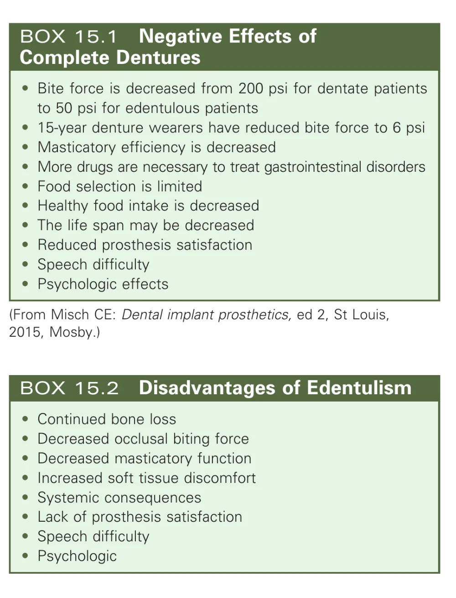
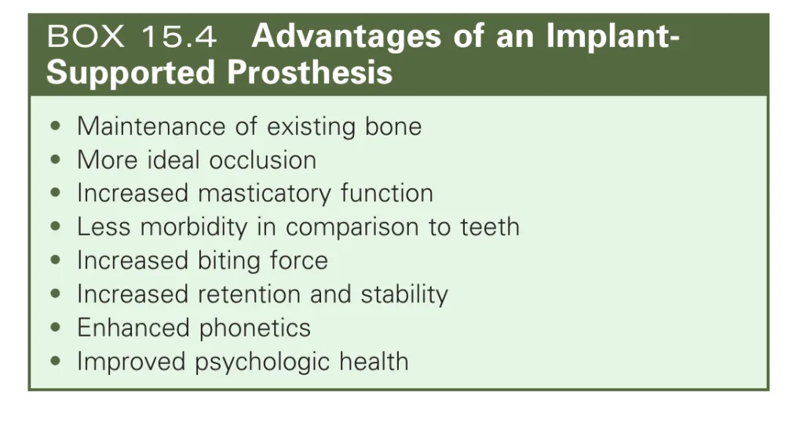

نسخه استخراجشده؛ ترجمه یا تأیید علمی انجام نشده است. وضعیت: captured
این یونیت با بقیه فرق دارد. سه یونیت گذشته طرح درمان را ساختند؛ این یونیت به سراغ عوارض پروتز متحرک ایمپلنتی میرود.
و شگفتانگیزترین نکته، خودِ نخستین عارضه است: نخستین عارضهی اوردنچر در بیمار بیدندان، یک خطای جراحی یا پروتزی نیست. عنوانش این است: «درک نکردن معایب بیدندانی».
و این یک وظیفه است، نه یک توصیه: «هنگام ارزیابی یک بیمار بیدندان، مسئولیت پزشک است که معایبی را که ممکن است از بیدندانی ناشی شود برای بیمار توضیح دهد.»
چرا این یک «عارضه» است؟ چون بیماری که پیامدها را نداند، ممکن است طرح درمان ایمپلنت را رد کند و به دنچر متعارف رضایت دهد — و آن انتخاب، خودش زنجیرهای از عوارض میسازد.
پیامد یکم بیدندانی — تحلیل ادامهدار استخوان، و اعدادش:
«استخوان آلوئولار برای حفظ فرم، استحکام و تراکم خود به تحریک مداوم نیاز دارد.» و گزارش شده که ۴ درصد کرنش به سیستم اسکلتی، استخوان را حفظ میکند و به تعادل پدیدههای تحلیل و تشکیل کمک میکند.
و وقتی دندان از دست میرود: نبود تحریک استخوان باقیمانده به کاهش ترابکولها و تراکم استخوان میانجامد، نخست در عرض خارجی، سپس در ارتفاع.
و یک تعادلبخشی مهم: «اگرچه استخوان مندیبل سریعتر از ماگزیلا تحلیل میرود، مندیبل در آغاز تقریباً دو برابر استخوان در دسترس دارد.» — پس نرخ تحلیل بهتنهایی کل داستان نیست.
و چرا پروتز متحرک وضع را بدتر میکند: «بار واردشده بر پروتز متحرک به سطح استخوان منتقل میشود، نه به ساختار داخلی آن. این باعث میشود خونرسانی به استخوان کاهش یابد و در نتیجه حجم کل استخوان از دست برود.» و تحلیل شتاب میگیرد وقتی بیمار یک پروتز نامناسبِ متکی بر بافت نرم میپوشد.
و اکنون سه عددی که وضعیت واقعی بیماران را نشان میدهند:
و توصیهی استاندارد در برابر آن ۱۴٫۸ سال: «در حالت ایدهآل، بیماران بیدندان باید هر ۱ تا ۲ سال ویزیت شوند و به آنها اطلاع داده شود که هر ۳ تا ۵ سال یک ریلاین یا دنچر جدید پیشنهاد میشود تا تحلیل استخوانِ افزودهای که بهطور طبیعی رخ میدهد جبران شود.» — یعنی فاصلهی میان عمل واقعی و توصیه، حدود ده برابر است.
و تحلیل به استخوان آلوئولار محدود نمیماند: بخشهایی از استخوان بازال هم میتواند تحلیل رود، بهویژه در بخش خلفی مندیبل، جایی که تحلیل شدید ممکن است به دهیسنس شدن فورامن منتال یا کانال مندیبولار بینجامد. نتیجه: درد و ناراحتی چشمگیر و ناتوانی در پوشیدن پروتز متحرک.
و در ماگزیلا، کل ریج قدامی و خار بینی (nasal spine) میتواند تحلیل رود، که به درد و افزایش حرکت دنچر ماگزیلا حین عملکرد میانجامد.

پیامد دوم — کاهش نیروی گاز اکلوزالی. و اعداد این بخش، آموزندهترین بخش کل درساند:
مسیر را دنبال کن: از ۲۰۰ به ۵۰، و از ۵۰ به ۶. یعنی هرچه بیمار مدت بیشتری بیدندان بماند، نیروی اکلوزالی کمتری میتواند تولید کند. این نکته هنگام توضیح طرحهای درمانی — بهویژه با انتظارهای بیمار — بسیار مهم است.
و در برابر آن: «حداکثر نیروی اکلوزالی ممکن است با یک پروتز ایمپلنتساپورتد بیش از ۳۰۰ درصد بهبود یابد.»
پیامد سوم — کاهش کارایی جویدن. در سنجش با الک، ۹۰ درصد غذای جویدهشده با دندان طبیعی از الک شمارهی ۱۲ عبور میکند؛ این مقدار در دنچرپوش به ۵۸ درصد کاهش مییابد.
پیامد چهارم — دشواری تکلم. و اینجا یک مکانیسم آناتومیک زیبا توضیح داده میشود:
در گزارشی از ۱۰۴ بیمار کاملاً بیدندان که به دنبال درمان بودند، ۸۸ درصد دشواری در تکلم را گزارش کردند و یکچهارم دشواری شدید داشتند.
سازوکارش: «پروتز پایین وقتی مندیبل خلفی تحلیل میرود، روی عضلهی بوکسیناتور و مایلوهایوئید مینشیند. وقتی بیمار دهانش را باز میکند، انقباض این عضلات مانند یک ترامپولین عمل میکند و دنچر پایین را از روی ریج بالا میپراند.» در نتیجه دندانها هنگام حرف زدن صدا میدهند — نه از زیادی بعد عمودی، بلکه از نبود پایداری و گیر پروتز.
و ۶۲٫۵ درصد همین بیماران، آگاهی از حرکت دنچر مندیبل را ذکر کردند، در حالی که پروتز ماگزیلا بیشتر وقتها سر جایش میماند.
پیامد پنجم — نارضایتی از پروتز و اثر روانشناختی. و اینجا دادههایی هست که کمتر شنیدهای:
و نتیجهای که از این دادهها گرفته میشود: بیماران حاضرند طعم ناخوشایند، نیاز به استفادهی مکرر، بدجا نشستن دنچر، موقعیتهای شرمآور و هزینهی مداوم را بپذیرند، تنها بهخاطر یک فایده: گیر بیشتر پروتز. «روشن است که نبود گیر و ریسک روانشناختی شرمساری در دنچرپوش، دغدغهای است که حرفهی دندانپزشکی باید به آن بپردازد.»
و در سوی مقابل، کادر ۱۵٫۴ هشت مزیت پروتز ایمپلنتساپورتد را میشمارد. اما یکی از آنها سازوکار غیرمنتظرهای دارد که ارزش دانستن دارد — اکلوژن ایدهآلتر:
«چون پروتز مندیبل ممکن است حین عملکرد تا ۱۰ میلیمتر یا بیشتر حرکت کند، تماسهای اکلوزالی درست بهطور تصادفی رخ میدهند، نه از روی طراحی.»
و آستانههای پروپریوسپشن، که این را عددی میکند: بیماران با دندان طبیعی میتوانند تفاوت ۲۰ میکرومتر را میان دندانها درک کنند، بیماران ایمپلنت با بریجهای رِیجید ۵۰ میکرومتر، و افراد با دنچر کامل ۱۰۰ میکرومتر. اگرچه ایمپلنتهای اندواسئوس پریودنتال مامبران ندارند، آگاهی اکلوزالی بیشتری از دنچر کامل فراهم میکنند.
